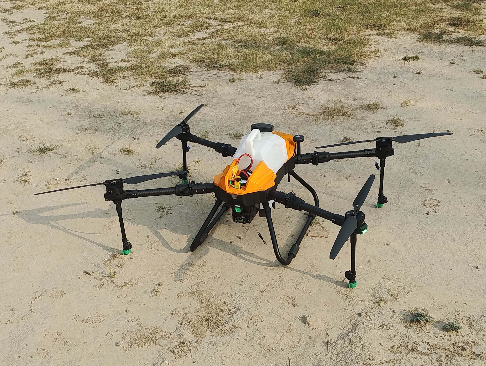
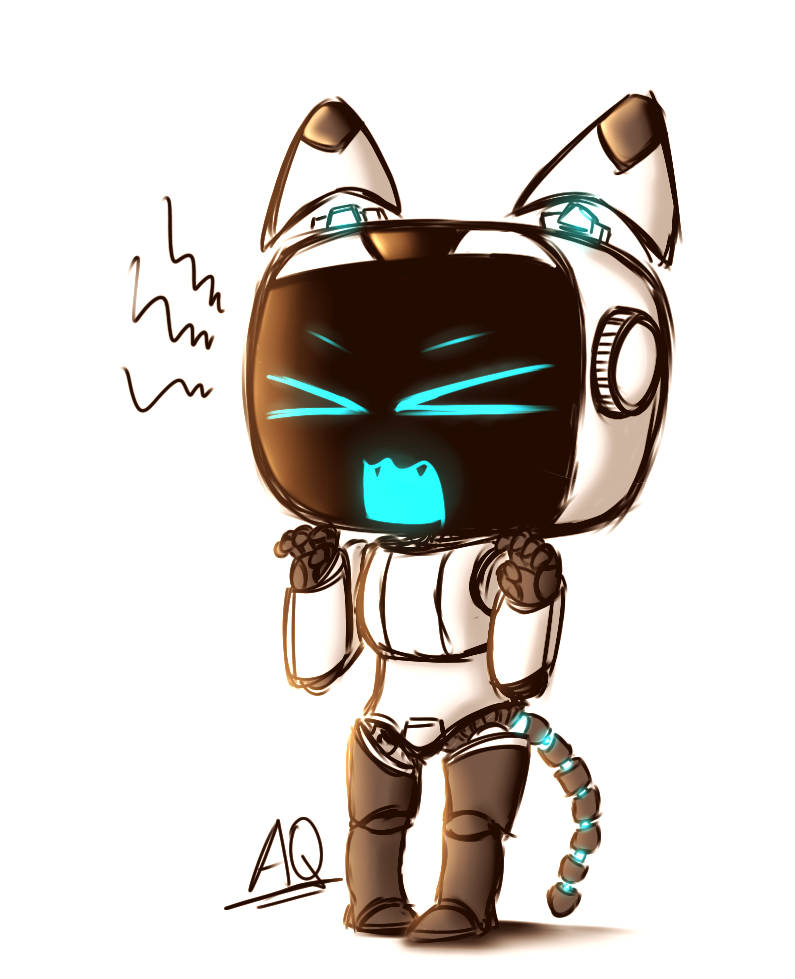
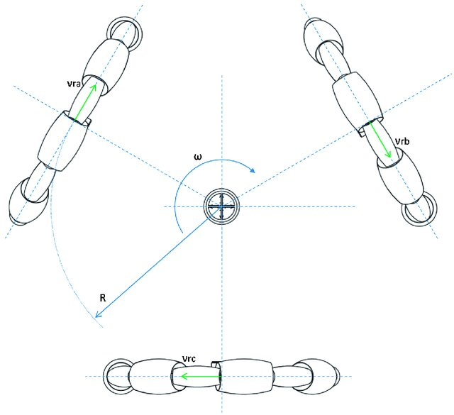

SLAMDrive UAV
Autonomous UAV using RetinaNet for weed detection in potato farms (89% accuracy) and human surveillance (97% accuracy), with real-time image processing and SLAM-based mapping.
I develop intelligent autonomous robotic systems through Control Theory, Multi-Agent Systems, Artificial Intelligence, Computer Vision, and Swarm Robotics. My research focuses on building scalable autonomous systems capable of cooperative perception, planning and decision making.

I am a PhD Research Scholar in the Department of Electrical Engineering at the Indian Institute of Technology Kanpur, specializing in Control & Automation. My work focuses on autonomous robotic systems that combine control theory, artificial intelligence and distributed decision making.
My research aims to bridge rigorous mathematical control theory with practical robotic systems capable of operating in uncertain environments.
I work on scalable autonomous systems inspired by nature, where multiple agents cooperate through decentralized intelligence instead of centralized control.
My interests include autonomous swarm robotics, multi-agent coordination, nonlinear control, computer vision, reinforcement learning and real-time robotic systems.
Department of Electrical Engineering
Specialization in Control & Automation
Research Topics:
Autonomous Swarm Robotics,
Multi-Agent Systems,
Artificial Intelligence,
Cooperative Control,
Computer Vision.
Advanced studies in Control Systems, Optimization, Machine Learning, Robotics, Signal Processing and Applied Mathematics.
Foundation in Electrical Engineering, Embedded Systems, Programming, Electronics, Mathematics and Automation.
Conducting research in autonomous swarm robotics, cooperative control, decentralized intelligence, motion planning and robotic autonomy.
Assisted undergraduate courses, laboratory sessions, tutorials, grading and academic mentoring.
Designed robotics software, simulation frameworks, AI pipelines, optimization algorithms, vision systems and embedded robotic applications.
Bio-inspired autonomous robotic systems, decentralized coordination, formation control and distributed decision making.
Cooperative control, consensus, graph theory, coalition formation and distributed optimization.
Deep learning, reinforcement learning, intelligent perception and decision-making for robotics.
Dubins paths, trajectory optimization, collision avoidance, nonlinear control and autonomous navigation.
Technologies that I use for research, simulation, robotics, AI and software development.

An end-to-end, plug-and-play 3D profilometry system: automated Z-axis traversal with synchronized high-throughput imaging at micron-level repeatability, ResNet–Attention U-Net segmentation of in-focus regions (mIoU 0.92, 45 ms inference), fuzzy-logic feedback control over EtherCAT achieving ±0.1 µm closed-loop accuracy, and variance-weighted focus stacking with Open3D point-cloud reconstruction (RMSE < 0.8 µm).

Autonomous UAV using RetinaNet for weed detection in potato farms (89% accuracy) and human surveillance (97% accuracy), with real-time image processing and SLAM-based mapping.

Preprocessing pipeline using ICA and bandpass filtering, followed by LSTM-RNN classification on EEG data, achieving 85% accuracy on multi-subject recordings.

Coordinated a fleet of holonomic robots for glyph rendering using camera-based localization and ArUco markers, with real-time path adjustments and sub-10 cm tracking error.

Self-balancing robot using an LQR controller and IMU fusion, capable of traversing slopes up to 15° with a stable 0.5° tilt error.
Alongside academic research, I develop simulation frameworks, robotics software, autonomous control algorithms, and open-source engineering tools.
Visit GitHubWhether you're interested in research collaboration, robotics, AI, control systems, or an engineering project, I'm always open to discussing new ideas.